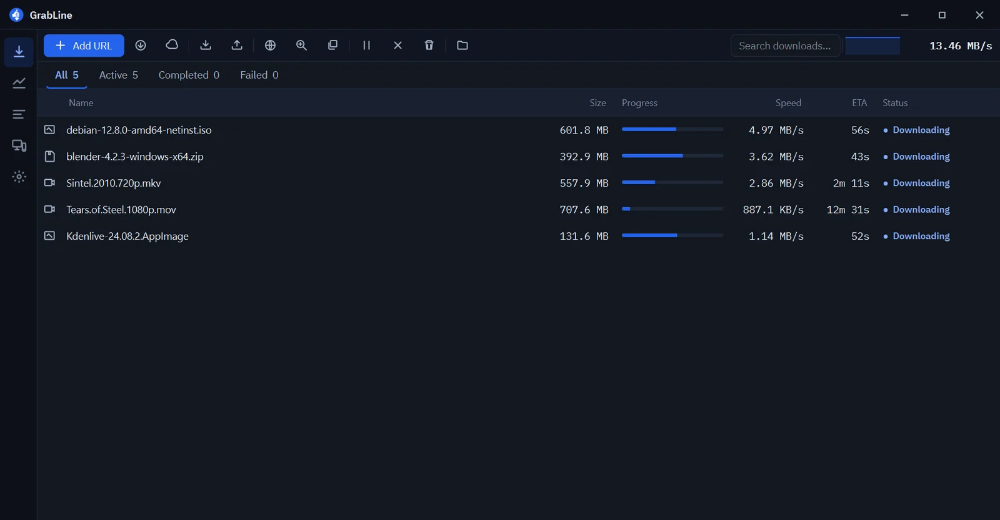
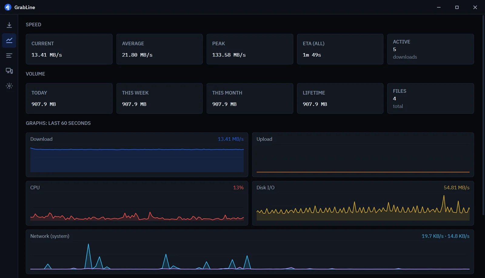
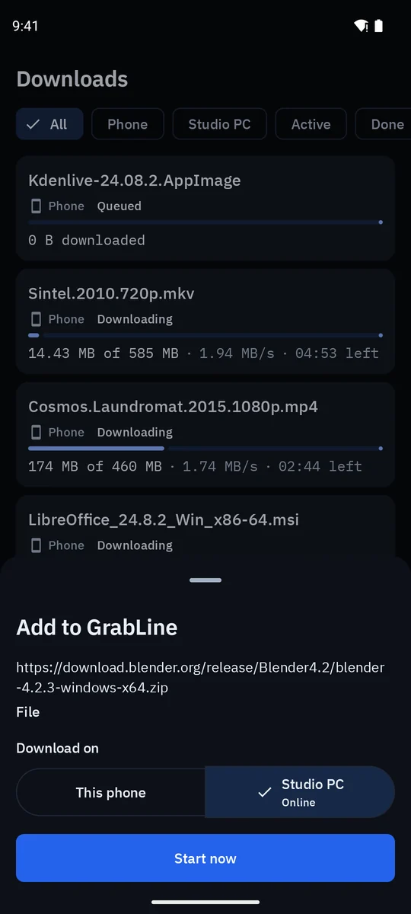
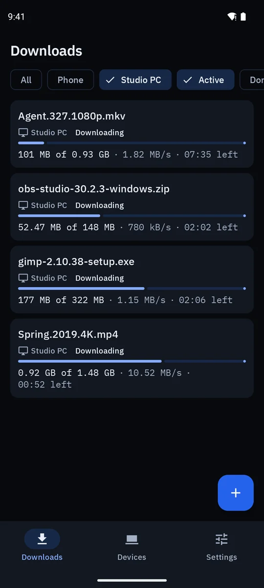
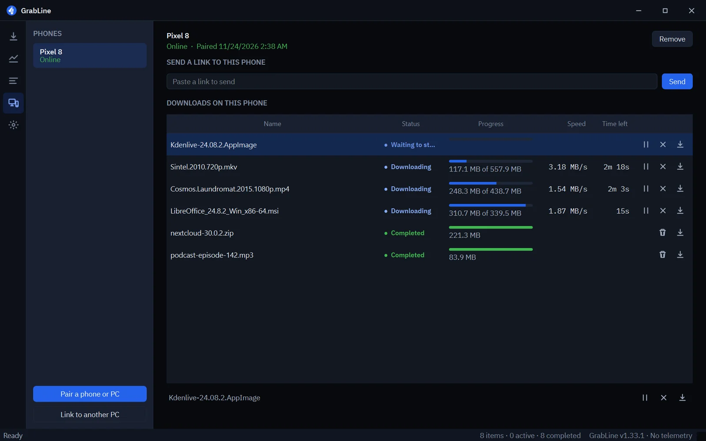

Video and audio
Pick the quality before it downloads, on more than 1000 sites. Subtitles, chapters, audio only and trimming included.

A free, open source download manager for Windows, macOS, Linux and Android. No ads, no account, no tracking.



Each file is split across up to 32 connections, and a download picks up where it stopped after a crash or a restart.
Pick the quality before it downloads, on more than 1000 sites. Subtitles, chapters, audio only and trimming included.
Magnets, torrent files, RSS feeds and watch folders, with seeding limits.
Send links, videos or every file on a page from Firefox, Chrome, Edge or Brave.
SFTP, FTP, WebDAV and S3, plus public Drive and Dropbox links. Passwords stay in your system keychain.
Named queues, quiet hours and speed limits. One queue can wait for another to finish.
Share a link from any app and choose where it downloads: on the phone, or on your PC. Video, torrents and file servers work on the phone too.


Pair a phone or another PC with a QR code. Each one sees the others' downloads and can pause, resume or start them.

Open Devices on the PC and scan the code with your phone, or type it in.
Send links to any device and manage its downloads from the others.
Encrypted, on your own Wi-Fi, with no cloud or account in between.
Free, with everything included. No Python or extra installs needed.
The desktop builds are not code signed yet, so your system may ask once. On Windows choose More info, then Run anyway. On macOS, right click the app and choose Open (on macOS 15, use Privacy and Security in System Settings). When Windows asks about the firewall the first time you pair a phone, choose Allow.
GrabLine talks to the sites you download from and to your own devices. That is it.
Nothing to sign up for and nothing to pay. Every feature is free.
No usage data is sent anywhere. Updates are checked on GitHub, and only if you allow it. Privacy policy
Phones and PCs pair over your home network with encryption. Nothing opens a port on your router.
Protected services such as Netflix, Disney+ and Spotify are not supported.
Free, and built in spare time.If GrabLine saves you time, a coffee or a GitHub star helps keep it going.
No. GrabLine for Android downloads on its own. Pairing a PC is optional and adds sending links between them and controlling the PC's downloads.
Put both on the same Wi-Fi. On the PC open Devices, click Pair a phone or PC and scan the code with the app. If scanning does not work, tap Enter the code by hand on the phone and type the address and code shown under the QR code.
Not yet. Devices talk over your own network only, so nothing is exposed to the internet.
Not at the moment. GrabLine runs on Windows, macOS, Linux and Android.
Both use parallel connections and a browser button. GrabLine is open source, runs on every desktop system and on Android, includes video, torrents and cloud, and sends no usage data.
Firefox has a signed add on. Chrome, Edge and Brave connect from Browser Setup in the app. Without an extension, paste a link into GrabLine.
Yes. It is open source under AGPL 3.0, with no paid tier and no trial. The code for the desktop app and the Android app is on GitHub.